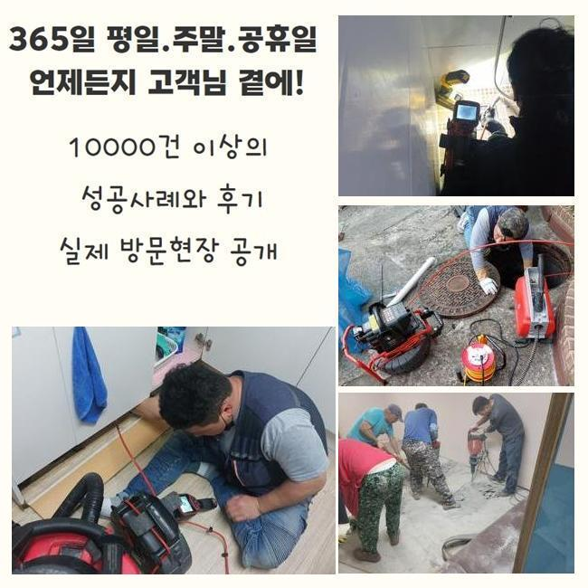
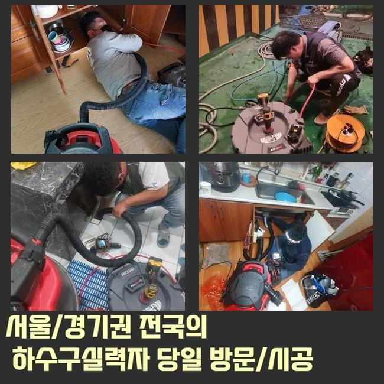
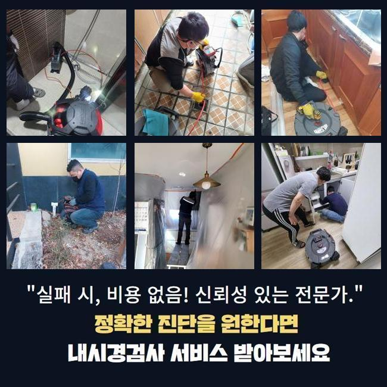
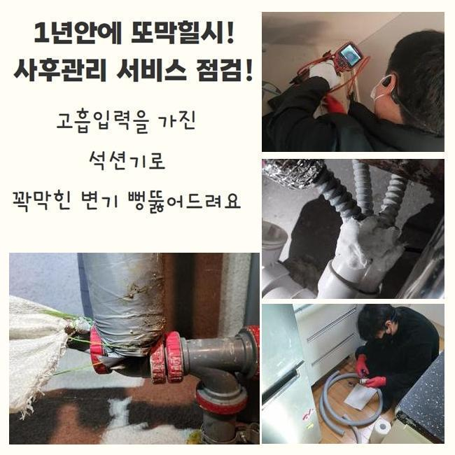
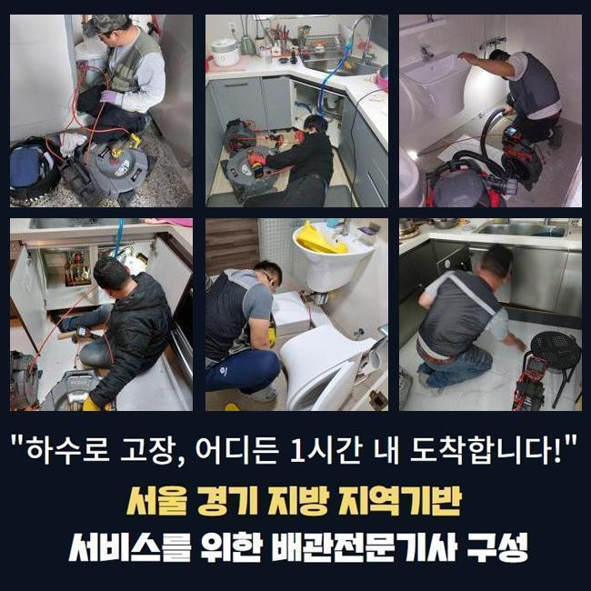
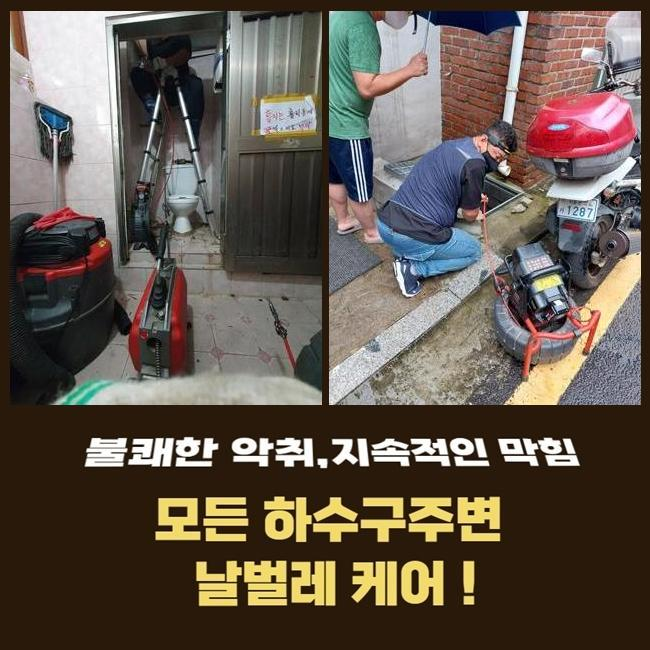

🏠 광주 목현동대변기역류 목동 배수로뚫기 물샘전문업체
광주 목현동 변기막힘 전문 시공 후기

📋 작업 개요
- 위치: 광주 목현동, 목현동, 광주
- 서비스 유형: 변기막힘, 배관막힘, 누수수리, 역류해결, 뚫는업체, 고압세척, 설비공사
- 작업 일시: 2025. 6. 8. 17:03
- 업체명: 하수구수사대 (010-5615-2118)
🔍 문제 상황
생활공간이나 바깥에서 물을 사용하는 시설은 정말 많습니다
이중 맛있는 식사를 조리하는 조리실이라는 구역도 있죠
키친에서는 싱싱한 채소들을 정리하고 준비된 식재료들을 투명한 물로 말끔하게 헹굽니다
그 후에 세척한 물을 방출하게 됩니다
배수시킬때 없어서는 안 될 부분이 있어요 그건 주방싱크의 파이프입니다
일상에서는 사용하는 중에는 절대 불편함이 없고 역류나 막힘 증상 없이 순조롭게 배출이 되었는데요
광주 목현동대변기역류 목동 배수로뚫기 물샘전문업체
어느 순간부터 불현듯 물이 원활히 흘러가지 않는 문제가 발생한다면 개수대에 이상이 일어났을 수도 있게됩니다
근래에 오래된 빌라를 다녀왔었어요 고객님은 황급한 어투로 말씀하셨는데요
음식 분쇄기기를 이용중인데 오염물이 퇴적된건지 이방법 저방법 시도해도 배수되지 않는다고 쉬는날에도 수리가 되는지 연락을 주신 건물입니다

🔎 원인 분석
💡 전문가 진단: 정밀 진단 장비를 사용하여 슬러지의 고착 여부를 판명하고 타격/세척 작업을 실시했습니다.
음식 찌꺼기 분쇄기로 곱게 분쇄된 음식물 찌꺼가 배수관에 정체되어 있다면 일반적인 방식으로는 해결되지 않아요
고객이 데려간 지점은 거실 내부에 위치한 부엌의 개수대였는데요
배수되지 않는 설거지대 주변에는 다양한 방법으로 수리하려고 애쓰셨던 흔적이 뚜렸했습니다
하수관 막힘을 뚫어줄때 사용하는 약제의 빈 통 여러개가 보였고 휘어져있는 케이블같은 도구가 개수대 위에 보였습니다
다양한 방안으로 애써봤지만 막힌상태로 남아있던 것 같아요
현재 상태를 확인하려고 주방싱크에서 물을 흐르게하여 체크해 봐야 하지만 벌써 의뢰인이 주방싱크를 떼어 놓은 상황이라서 확인은 할 수 없었구요
배수관 안쪽에는 줄기 채소들을 다량 분쇄했는지 물 위에 동동 부유하는 것이 보이네요
먼저 현재상태에 대해 직접 눈으로 점검했으니 고객께 하수관 뚫기를 어떤 식으로 시행하는지 안내해드렸어요
저희 팀은 차근차근 진행하는데요 흡입장치를 투입해 우선 자그마한 오물을 정리해줍니다
이러한 공정으로 보통의 의뢰인 댁은 해결이 가능하지만 이 공정으로도 해결되지 않으면 부수적인 공사들을 적용할 수 있습니다

🔧 작업 과정
전동스프링장치와 플렉스 샤프트장비를 투입해 수리를 실시하는거죠
방문한 현장 또한 흡입장비로 대부분 처리하였지만 고객이 사전에 직접 시도했던 자취가 도리어 장애의 크기를 확장시켜서 또 다른 공사가 실시되어야 했습니다
그리하여 저희 수리공은 플렉스 샤프트장비를 사용하여 부가적인 공사의 필요성을 설명드렸으며 고객님 역시 흔쾌히 추가공사를 요청하셨어요
막힘을 뚫는 장치 성질상 약간 과격하게 가동이되는데요 이렇게되면 배수구에 충격을 가하게 되니 전문 숙련자의 노하우가 필요해요
근래들어서는 시장에 셀프 수리 장치도 팔고 있어서 샤프트기구와 비슷한 구조의 대중적인 장치도 간편하게 찾아볼 수 있지만 이 수리는 정교함을 갖고 있어야 하므로 전문가가 아닌 사람이 처리하기엔 알맞지 않아요
저희들이 고객의 막혀버린 주방싱크 파이프에 샤프트기기를 진입시킨뒤 수회에 걸쳐 세척작업을 했더니 문제구간에서 원활히 흘러가기 시작하였어요
이 외의 장애는 없는지 검사하기 위해 내시경기구를 진입시켜 하수관 속을 관찰했고 감사하게도 배관 안쪽은 새 배관처럼 깔끔했습니다
하수관로 세척을 끝마친 다음 의뢰자가 분리해 놓은 설거지대 부품을 다시 조립했어요
설치하는 중에 깨진 구성품들도 발견되어 새제품으로 바꾸는 것을 권유드렸고 고객 또한 찬성하셔서 몇몇 구성품도 새것으로 바꿔드렸습니다
작업일체를 끝낸뒤 마지막단계로 설거지대에서 물을 배출해보았고 원활히 배출되는것을 의뢰자에게도 보여드리고 작업을 완료했습니다
이곳과 같은 일들이 일어난다면 문제를 겪는 사람은 난처하고 기분이 안좋을텐데요
하지만 전문팀에게 수리를 의뢰하려니 많은 비용이들까봐 걱정되어 대다수가 머뭇거리시는 것 같은데요
그렇기에 스스로 막힘 해결을 하기위해 노력하지만 막힘이 제거되는 상황은 적어요
일반적으로 실시하는 해결책 중 하나는 접근이 용이한 하수관 전용 약제입니다
시장에서 구하기 편리하고 이용방법이 간단해 많은 사람이 사용하시지만 부적절하게 이용하여 더욱 문제를 나쁘게 만드는 분들도 있습니다
이때는 수리는 고사하고 시간과 예산을 의미없이 소모하게됩니다


✅ 작업 완료
우연찮게 해결이 된다 해도 배수관 속을 상태를 확인하면 물이 빠져나가는 틈새만 만들어져 아주잠깐 임시로 해결이 된 상황으로 볼 수 있어요
그렇기에 재발할 가능성이 대단히 높고 이미 축적된 오염물질위에 추가 이물질들이 누적되면서 사태를 더욱 확대시킬 수 있죠
이와 같은 내용을 감안한다면 전문수리공에게 맡긴후에 즉각적이고 정확히 수리하는 것이 반대로 수리비용이 절약될 수 있는데다가 시간을 감소시킬 수 있습니다
거주하는곳에도 하수관 막힘이 나타난 경우 손쉬운 수리를 해본 후 신속하게 해결이 안될것 같다면 신속히 숙련된 업체를 선택하시는 것을 추천드립니다




⚠️ 베란다 누수 및 방수 관리 방법
- ✅ 비가 많이 올 때 창틀 주변이나 아래층 천장에 얼룩이 생기는지 정기적으로 확인해 보세요.
- ✅ 우수관 주변 실리콘 마감이 들뜨거나 깨진 틈새가 있는지 손상 여부를 수시로 체크하세요.
- ✅ 베란다 바닥 타일의 줄눈(메지)이 소실되면 그 틈으로 물이 침투하여 누수가 유발됩니다.
- ✅ 누수 의심 증상 발견 시 방치하면 아래층 손실이 커지므로 즉시 전문가의 진단을 받으십시오.
💡 핵심 정리
- 확실한 장비 작업(내시경 점검 및 샤프트 스케일링)으로 원인을 뿌리 뽑습니다.
- 작업 후 1년 이내에 동일한 부위 재발 시 100% 무상 A/S 서비스를 보장합니다.
- 서울 · 경기 · 인천 전 지역에 24시간 언제든 긴급 출동할 수 있도록 항시 대기 중입니다.
❓ 자주 묻는 질문 (FAQ)
🚨 광주 목현동 변기막힘 문제로 고민이신가요?
정확한 원인 진단과 확실한 시공으로 재발 없는 해결을 약속드립니다.
24시간 긴급 출동 | 서울 · 경기 · 인천 전지역 | 1년 내 재발 시 무상 A/S